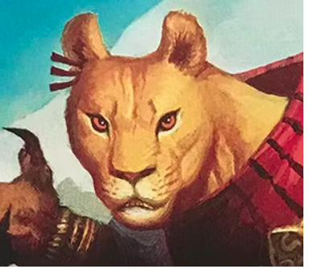
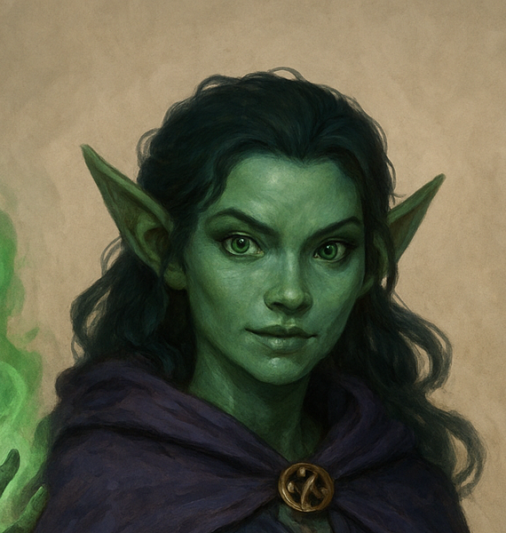
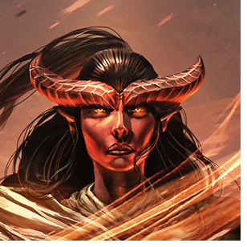
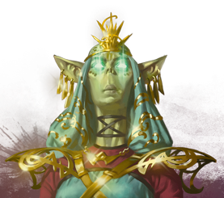
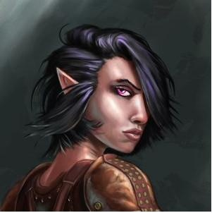
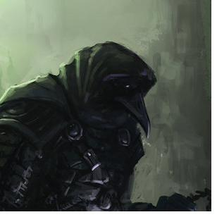

Each character includes a full five–page sheet: portrait & identity, stats, background, inventory, and features. Choose one, or hand the whole table out and let players pick.

Garrick Vorn
Goliath Fighter, Battle Master
A warlord offers gold or command of a company for any of the party's lost ancestral blades.

Korr Vekthar
Leonin Barbarian, Path of the Storm Herald
Dreams of reviving the arena's legendary blood-sport — and becoming its next champion.

Kaelor Rhun
Elf Ranger, Beast Master
Legend speaks of a crimson stag cursed to haunt the ruined palace gardens.

Lethari Vos
Duergar Druid, Circle of the Moon
The Court's corruption spreads into the natural world — restore it, or destroy it.

Malrik Dhoran
Tiefling Warlock, Hexblade
A dark power whispers: feed the altar a sacrifice, and the world receives dark miracles again.

Selvos Marr
Tiefling Wizard, School of Divination
Seeks the lost knowledge to craft a crystal-powered magic sword, said to rest in the treasury.

Serai Thalos
Satyr Bard, College of Mourning
Chasing inspiration in old ruins, dark and dangerous — and traces of the world she lost.

Shaen Orvo
Githzerai Monk, Way of the Long Death
Researching "Persistent Nodes" — sites where power, death, and transformation cycle.

Tey'orah Senn
Dwarf Cleric, Life Domain
Commanded in dreams to cleanse or consecrate the Court's dark altar.

Vess Thrynn
Elf Rogue, Arcane Trickster
Paid a hefty fee for vault access — needs the investment to pay off.

Zyra Kethis
Tiefling Sorcerer, Divine Soul
Wants to live up to the legend of her bloodline's crystal-powered sword.

Thane Aurell
Paladin, Oath of the Crown
Wants control of the dark altar to call followers to his cause.